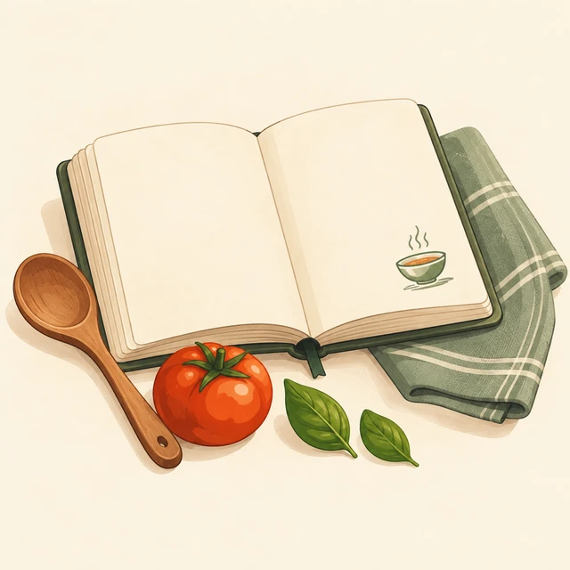
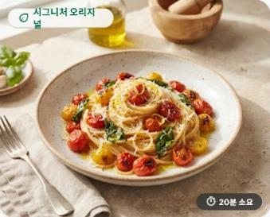

<!doctype html><html lang="ko"><meta charset="utf-8"><meta name="viewport" content="width=device-width, initial-scale=1"><meta name="theme-color" content="#086b50"><title>YumStep · Kitchen Remix</title><link rel="icon" type="image/png" sizes="32x32" href="yumstep-icon-32.png?v=2"><link rel="shortcut icon" href="favicon.ico?v=2"><link rel="apple-touch-icon" sizes="180x180" href="yumstep-icon-180.png?v=2"><link rel="manifest" href="manifest.webmanifest"><meta name="apple-mobile-web-app-capable" content="yes"><meta name="apple-mobile-web-app-title" content="YumStep"><style>
@import url('https://fonts.googleapis.com/css2?family=Noto+Sans+KR:wght@400;500;600;700;800;900&display=swap');
:root{--green:#076b50;--mint:#e7f3ed;--orange:#ff7a24;--ink:#23382f;--muted:#7b8980;--line:#e5e9e3}*{box-sizing:border-box}body{margin:0;background:#f8f9f5;color:var(--ink);font-family:'Noto Sans KR',sans-serif;font-size:14px}button,input,select,textarea{font:inherit}button{cursor:pointer;border:0;background:transparent;color:inherit}button:focus-visible,a:focus-visible{outline:3px solid var(--orange)}header{height:87px;border-bottom:1px solid var(--line);background:#fff;display:flex;align-items:center;justify-content:space-between;padding:0 5vw;position:sticky;top:0;z-index:20}.brand{display:flex;align-items:center;gap:11px;color:var(--green);font-weight:900;font-size:25px;letter-spacing:-1px}.brand i{font-style:normal;background:var(--mint);width:42px;height:42px;border-radius:50%;display:grid;place-items:center}.brand small{font-size:11px;letter-spacing:2px;color:#87958b}nav{display:flex;gap:30px}nav button{padding:30px 0;font-weight:700}nav button.active{color:var(--green);border-bottom:3px solid var(--green)}.primary,.orange{background:var(--green);color:white;border-radius:50px;padding:13px 23px;font-weight:700}.orange{background:var(--orange)}.outline{border:1px solid var(--line);border-radius:50px;padding:10px 18px;background:white}.shell{max-width:1320px;margin:auto;padding:35px 44px 90px}.eyebrow{font-size:11px;letter-spacing:2px;font-weight:800;color:var(--green)}h1{font-size:44px;letter-spacing:-2px;line-height:1.35;margin:15px 0}h2{font-size:25px;letter-spacing:-1px;margin:0}h3{margin:0 0 10px;font-size:19px}p{line-height:1.8;color:#718077}.intro{display:flex;justify-content:space-between;align-items:end;margin-bottom:30px}.search{display:flex;gap:12px;padding:15px 20px;border:1px solid var(--line);background:white;border-radius:15px;min-width:380px}.search input{border:0;outline:0;width:100%;background:none}.chips{display:flex;gap:9px;flex-wrap:wrap;margin:20px 0}.chip{border-radius:25px;padding:10px 19px;background:#edf0ea;color:#637267;font-weight:600}.chip.on{background:var(--green);color:#fff}.hero{display:grid;grid-template-columns:1fr 1.05fr;min-height:360px;border-radius:24px;overflow:hidden;background:#e9f0e6;margin:25px 0 38px}.hero-text{padding:35px 40px}.hero h2{font-size:34px;line-height:1.45;margin:15px 0;letter-spacing:-1.5px}.hero-img{position:relative}.hero-img img{width:100%;height:100%;object-fit:cover}.photo-label{position:absolute;bottom:20px;left:20px;background:#ffffffeb;padding:10px 15px;border-radius:40px;font-size:12px;font-weight:700}.tag{display:inline-block;font-size:11px;font-weight:700;padding:5px 10px;border-radius:20px;background:var(--mint);color:var(--green)}.section-head{display:flex;align-items:center;justify-content:space-between;margin-bottom:22px}.grid{display:grid;grid-template-columns:repeat(3,1fr);gap:23px}.card{background:white;border:1px solid var(--line);border-radius:20px;overflow:hidden;transition:transform .2s}.card:hover{transform:translateY(-3px)}.cover{height:215px;position:relative;cursor:pointer}.cover img{width:100%;height:100%;object-fit:cover}.badge{position:absolute;left:15px;top:15px;background:white;padding:6px 10px;border-radius:20px;font-size:11px}.save{position:absolute;right:13px;top:12px;background:#fffffff0;border-radius:50%;width:35px;height:35px;font-size:20px}.card-body{padding:21px}.card-body h3{font-size:19px;letter-spacing:-.7px}.card-body p{font-size:12px;margin:8px 0 15px;min-height:40px}.meta{display:flex;justify-content:space-between;align-items:center;border-top:1px solid var(--line);padding-top:14px;margin-top:16px;font-size:11px}.avatar{display:inline-grid;place-items:center;border-radius:50%;width:26px;height:26px;background:#d5e9df;color:var(--green);font-size:11px;font-weight:800;margin-right:6px}.notice{font-size:11px;color:#839086;margin-top:30px;text-align:center}.panel{background:white;border:1px solid var(--line);border-radius:20px;padding:26px;margin-bottom:20px}.detail{display:grid;grid-template-columns:1.05fr 1fr;gap:30px;margin-top:25px}.detailphoto{width:100%;height:350px;object-fit:cover;border-radius:20px}.stats{display:flex;gap:12px;margin:25px 0}.stats>div{background:#f3f5f0;border-radius:12px;flex:1;padding:15px;text-align:center}.stats small{display:block;color:var(--muted);margin-bottom:6px}.row{display:flex;align-items:center;justify-content:space-between;gap:12px}.ing{border-bottom:1px solid var(--line);padding:15px 0}.ing input{accent-color:var(--green);margin-right:10px}.step{background:#f5f6f2;border-radius:14px;padding:18px;margin:15px 0}.step b{display:block;margin-bottom:8px}.step p{margin:0}.back{color:var(--green);font-weight:700;margin-bottom:20px}.two{display:grid;grid-template-columns:1fr 1fr;gap:18px}.diff{padding:15px;background:#eaf6ef;margin:10px 0;border-radius:12px}.diff del{color:#91a096;margin-right:15px}.fields{display:grid;grid-template-columns:1fr 1fr;gap:17px}label{display:block;font-weight:700;font-size:12px}label input,label select,label textarea{display:block;width:100%;padding:12px;border:1px solid var(--line);border-radius:10px;margin-top:7px;background:#fafbf8;color:var(--ink)}label.full{grid-column:1/-1}textarea{min-height:95px;resize:vertical}.tree{border-left:2px solid #9ccdb7;padding-left:28px;margin-left:15px}.node{display:block;background:var(--mint);border:1px solid #b8daca;padding:20px;border-radius:14px;margin:20px 0;text-align:left;width:100%}.modal{position:fixed;inset:0;background:#172c2377;z-index:50;display:grid;place-items:center;padding:20px}.dialog{background:white;padding:30px;border-radius:22px;max-width:650px;max-height:90vh;overflow:auto;width:100%}.timer{font-size:65px;letter-spacing:-3px;text-align:center;font-weight:900;padding:35px;border:10px solid #bde8d5;border-radius:50%;width:250px;height:250px;margin:25px auto;display:grid;place-content:center}.timer small{font-size:12px;letter-spacing:0;font-weight:500}.cook{max-width:760px;margin:auto}.progress{height:7px;background:#e1e7df;border-radius:10px;overflow:hidden;margin:20px 0}.progress>div{height:100%;background:#10b985}#toast{position:fixed;bottom:30px;left:50%;transform:translateX(-50%);background:#203d30;color:white;padding:13px 25px;border-radius:30px;z-index:100;display:none}.empty{padding:70px;text-align:center}.subtle{font-size:12px;color:var(--muted)}.mobile{display:none}footer{border-top:1px solid var(--line);padding:24px 0;margin-top:40px;display:flex;justify-content:space-between;color:var(--muted);font-size:11px} @media(max-width:900px){header{padding:0 20px;height:72px}nav{gap:18px}.brand small{display:none}.shell{padding:25px 20px 100px}.intro{display:block}h1{font-size:34px}.search{min-width:0;margin-top:20px}.grid{grid-template-columns:1fr 1fr}.hero-text{padding:25px}.hero h2{font-size:27px}.detail{grid-template-columns:1fr}}@media(max-width:600px){nav{display:none}.brand{font-size:22px}header .primary{padding:10px 15px;font-size:12px}.hero{grid-template-columns:1fr;margin-top:20px}.hero-img{height:220px}.hero-text{padding:25px}.hero h2{font-size:29px}.grid{grid-template-columns:1fr}.cover{height:245px}.intro p{font-size:13px}.two,.fields{grid-template-columns:1fr}.mobile{display:flex;position:fixed;bottom:0;left:0;right:0;background:#fff;z-index:25;justify-content:space-around;border-top:1px solid var(--line);padding:12px 4px}.mobile button{font-size:11px;font-weight:700}.mobile span{display:block;font-size:21px;margin-bottom:4px}.panel{padding:20px}.shell{padding-top:24px}.section-head h2{font-size:22px}footer{display:block}.chips{gap:6px}.chip{padding:9px 14px}h1{font-size:32px}}
.brand-image{width:48px;height:48px;object-fit:contain;border-radius:12px;flex-shrink:0}.brand-name{text-align:left}.brand-name small{display:block;font-size:10px;letter-spacing:1px;margin-top:3px}@media(min-width:1100px){body{padding-left:240px}header{position:fixed;inset:0 auto 0 0;width:240px;height:100dvh;padding:28px 22px;flex-direction:column;justify-content:flex-start;border-right:1px solid var(--line);border-bottom:0;overflow-y:auto;gap:24px}.brand{flex-direction:column;gap:16px;width:100%;font-size:26px}.brand-image{width:190px;height:190px;border-radius:18px}.brand-name{text-align:center}.brand-name small{display:block;font-size:11px}nav{display:flex;flex-direction:column;gap:7px;width:100%}nav button{padding:15px 16px;text-align:left;border-radius:12px}nav button.active{border:0;background:var(--mint)}header>.primary{margin-top:auto;width:100%;font-size:12px;padding:13px 9px}.shell{padding-left:32px;padding-right:32px}.intro{display:block}.search{max-width:520px;margin-top:20px}}@media(max-width:1099px){header{gap:12px}.brand{font-size:20px;letter-spacing:-.5px;gap:8px}.brand-name small{display:block;font-size:9px}.brand-image{width:42px;height:42px}nav{gap:18px}nav button{font-size:12px}.brand small{letter-spacing:.5px}}</style><header><button class="brand" onclick="go('explore')"><span class="brand-name">YumStep<small>Kitchen Remix</small></span></button><nav id="nav"></nav><button class="primary" onclick="editor()">＋ 레시피 만들기</button></header><main id="app" class="shell"></main><div class="mobile" id="mobile"></div><div id="overlay"></div><div id="toast" role="status"></div>
<script>
const $=s=>document.querySelector(s),esc=s=>String(s??'').replace(/[&<>"']/g,c=>({'&':'&amp;','<':'&lt;','>':'&gt;','"':'&quot;',"'":'&#39;'}[c]));
const seed=[{id:'pasta',title:'바질 토마토 파스타',desc:'신선한 바질과 방울토마토로 완성하는, 가장 기분 좋은 한 접시.',author:'그린셰프 민지',time:20,cat:'양식',tags:['채식','간편식'],photo:'pasta.jpg',allergen:'밀',ingredients:[['스파게티 파스타면',180,'g'],['방울토마토',15,'개'],['생바질 잎',10,'장'],['엑스트라 버진 올리브오일',3,'큰술'],['다진 마늘',1,'큰술'],['소금',1,'작은술']],steps:['끓는 물에 소금을 넣고 파스타를 8분 삶아주세요. 면수 100ml를 남겨둡니다.','팬에 올리브오일을 두르고 마늘을 볶은 후, 반으로 자른 방울토마토를 넣고 볶아주세요.','삶은 면과 면수를 넣고 잘 섞으며 소스를 입혀주세요.','불을 끄고 생바질을 올려 마무리합니다.'],timers:[480,300,120,0],servings:2},{id:'toast',title:'아보카도 에그 토스트',desc:'크리미한 아보카도와 달걀, 스리라차 한 방울로 달라지는 아침.',author:'모닝키친',time:10,cat:'양식',tags:['15분 컷','매운맛'],photo:'toast.jpg',allergen:'밀, 달걀',ingredients:[['식빵',2,'장'],['아보카도',1,'개'],['달걀',2,'개'],['스리라차',1,'작은술']],steps:['빵을 바삭하게 구워주세요.','아보카도를 으깨 빵 위에 올려주세요.','달걀을 익혀 올리고 소스로 마무리합니다.'],timers:[120,0,180],servings:2},{id:'curry',title:'채소 듬뿍 치킨 카레',desc:'브로콜리와 감자를 가득 넣은, 따뜻하고 든든한 오늘의 식탁.',author:'한스푼 연구소',time:25,cat:'아시아',tags:['고단백','간편식'],photo:'curry.jpg',allergen:'카레 제품의 표시 확인',ingredients:[['닭가슴살',200,'g'],['브로콜리',100,'g'],['감자',1,'개'],['카레가루',40,'g']],steps:['닭가슴살과 채소를 한입 크기로 썰어주세요.','팬에서 닭고기를 충분히 익힌 후 채소를 넣습니다.','물과 카레가루를 넣고 감자가 익을 때까지 끓입니다.'],timers:[0,420,600],servings:2}];
let state=JSON.parse(localStorage.getItem('yumstep-v1')||'{"recipes":[],"saved":[],"reviews":{},"likes":[],"profile":"나의 키친"}');let page='explore',filter='전체',query='',current='pasta',portion=2,step=0,seconds=0,ticking=false,clock,deadline=0,shopping=[];
const recipes=()=>[...seed,...state.recipes],get=id=>recipes().find(x=>x.id===id),persist=()=>localStorage.setItem('yumstep-v1',JSON.stringify(state));
function toast(t){$('#toast').textContent=t;$('#toast').style.display='block';setTimeout(()=>$('#toast').style.display='none',2600)}
const tabs=[['explore','탐색','◈'],['tree','리믹스 계보','⑂'],['fridge','냉장고 요리','▤'],['saved','저장한 레시피','▱'],['profile','내 키친','◉']];
function go(p){clearInterval(clock);ticking=false;page=p;render();window.scrollTo(0,0)}
function render(){for(const target of ['nav','mobile'])$('#'+target).innerHTML=tabs.map(([p,t,i])=>`<button class="${page===p?'active':''}" onclick="go('${p}')">${target==='mobile'?`<span>${i}</span>`:''}${t}</button>`).join('');if(page==='detail')return detail();if(page==='compare')return compare();if(page==='cook')return cook();if(page==='tree')return tree();if(page==='profile')return profile();explore()}
function cards(list){return list.length?list.map(r=>`<article class="card"><div class="cover" onclick="openRecipe('${r.id}')"><span class="badge">◷ ${r.time}분 · 쉬움</span><button class="save" aria-label="레시피 저장" onclick="event.stopPropagation();save('${r.id}')">${state.saved.includes(r.id)?'▣':'▱'}</button></div><div class="card-body"><span class="tag">${r.parent?'나만의 리믹스':'오리지널 레시피'}</span><h3 style="margin-top:12px"><button onclick="openRecipe('${r.id}')" style="text-align:left;padding:0">${esc(r.title)}</button></h3><p>${esc(r.desc)}</p>${r.tags.map(t=>`<span class="tag">${esc(t)}</span> `).join('')}<div class="meta"><span><span class="avatar">${esc(r.author[0])}</span>${esc(r.author)}</span><button onclick="openRecipe('${r.id}')">레시피 보기 ↗</button></div></div></article>`).join(''):'<div class="empty">조건에 맞는 레시피가 없습니다.</div>'}
function explore(){let saved=page==='saved',fridge=page==='fridge';$('#app').innerHTML=`<div class="intro"><div><div class="eyebrow">A LITTLE TWIST, A NEW FAVORITE</div><h1>${saved?'다시 만들고 싶은, 한 접시.':fridge?'냉장고에서 시작하는 한 끼.':'당신의 한 끗이, 새로운 레시피.'}</h1><p>${saved?'마음에 담아 둔 맛있는 아이디어를 모았어요.':fridge?'재료를 쉼표로 입력하세요. 하나 이상 포함된 레시피를 찾아드려요.':'좋아하는 레시피를 발견하고, 나만의 맛으로 이어가세요.'}</p></div><div class="search"><span>⌕</span><input aria-label="레시피 검색" placeholder="${fridge?'예: 달걀, 토마토, 마늘':'요리, 재료, 태그를 검색해 보세요'}" value="${esc(query)}" oninput="query=this.value;updateResults()"><button onclick="filters()" aria-label="필터">☷</button></div></div>${!saved&&!fridge?`<div class="hero"><div class="hero-text"><span class="tag">THE REMIX SPOTLIGHT · 오늘의 영감</span><h2>익숙한 파스타에<br>당신만의 이야기를 더해요.</h2><p>재료 하나를 바꾸는 작은 시도.<br>새로운 레시피는 그렇게 시작됩니다.</p><button class="primary" onclick="openRecipe('pasta')">오늘의 레시피 만나기 ↗</button></div><div class="hero-img"><span class="photo-label">그린셰프 민지의 오리지널 · 20분 완성</span></div></div>`:''}<div class="section-head"><div><h2>${saved?'나의 레시피 컬렉션':fridge?'보유 재료로 찾기':'오늘, 어떤 맛으로 리믹스할까요?'}</h2><p class="subtle">${saved?'저장 버튼으로 나만의 요리책을 채워보세요.':'작은 변화를 나누는 맛있는 공간'}</p></div><button class="outline" onclick="filter='전체';query='';render()">전체 보기 ↗</button></div><div class="chips">${['전체','채식','15분 컷','고단백','양식','아시아'].map(t=>`<button class="chip ${filter===t?'on':''}" onclick="filter='${t}';render()">${t}</button>`).join('')}</div><div class="grid" id="results"></div><footer><b>Kitchen Remix <span style="font-weight:400">by YumStep</span></b><span>작은 변화로 더 풍성한 식탁을.</span><button onclick="policy()">이용 안내 · 신뢰와 안전</button></footer><p class="notice">체험 버전 · 예시 레시피 포함 · 작성 및 저장 데이터는 이 브라우저에 보관됩니다.</p>`;updateResults()}
let maxTime=999,exclude='';function updateResults(){let list=recipes().filter(r=>(page!=='saved'||state.saved.includes(r.id))&&(filter==='전체'||r.tags.includes(filter)||r.cat===filter)&&(r.time<=maxTime)&&(!exclude||!r.allergen.includes(exclude)));list=list.filter(r=>page==='fridge'?query.split(',').filter(t=>t.trim()).some(t=>r.ingredients.some(i=>i[0].includes(t.trim())))||!query:(r.title+r.desc+r.tags.join()+r.ingredients.flat().join()).toLowerCase().includes(query.toLowerCase()));$('#results').innerHTML=cards(list)}
function save(id){state.saved=state.saved.includes(id)?state.saved.filter(x=>x!==id):[...state.saved,id];persist();render();toast(state.saved.includes(id)?'레시피를 저장했어요.':'저장을 해제했어요.')}
function openRecipe(id){current=id;portion=get(id).servings;go('detail')}
function detail(){let r=get(current),parent=get(r.parent);$('#app').innerHTML=`<button class="back" onclick="go('explore')">← 탐색으로 돌아가기</button><div class="detail"><div><div class="panel" style="margin-top:20px"><div class="row"><h3>재료 준비</h3><div><button class="outline" onclick="portion=Math.max(1,portion-1);detail()">−</button> <b>${portion}인분</b> <button class="outline" onclick="portion++;detail()">＋</button></div></div>${r.ingredients.map(([n,a,u])=>`<div class="row ing"><label><input type="checkbox" style="display:inline;width:auto">${esc(n)}</label><b>${+(a*portion/r.servings).toFixed(2)}${esc(u)}</b></div>`).join('')}<button class="outline" style="margin-top:20px" onclick="shop()">＋ 장보기 목록 만들기</button><p class="subtle">1큰술 = 15ml · 1작은술 = 5ml · 1컵 = 200ml 기준. g 변환은 재료별 밀도가 필요합니다.</p></div></div><div><span class="tag">${parent?'REMIX RECIPE':'ORIGINAL RECIPE'}</span><h1 style="font-size:35px">${esc(r.title)}</h1><p>${esc(r.desc)}</p>${parent?`<button class="tag" onclick="openRecipe('${parent.id}')">⑂ ${esc(parent.author)}님의 ‘${esc(parent.title)}’에서 변형 ↗</button>`:''}<div class="stats"><div><small>조리 시간</small><b>${r.time}분</b></div><div><small>난이도</small><b>${esc(r.difficulty||'쉬움')}</b></div><div><small>카테고리</small><b>${esc(r.cat)}</b></div></div><div class="row panel"><span><span class="avatar">${esc(r.author[0])}</span>${esc(r.author)}</span><button class="outline" onclick="toast('회원 팔로우는 계정 연동 후 제공됩니다.')">팔로우</button></div><div class="panel" style="background:#fff3e8;border-color:#f2dcc9"><h3>좋은 레시피는 계속 자라니까.</h3><p>재료를 바꾸고, 나의 취향을 담아보세요.<br>원작자 크레딧과 변경점은 자동으로 연결됩니다.</p><button class="orange" onclick="editor('${r.id}')">⑂ 나만의 버전 만들기</button> <button onclick="${parent?"go('compare')":"go('tree')"}">${parent?'원본과 비교 ↗':'리믹스 계보 ↗'}</button></div><div class="row"><button class="outline" onclick="like()">${state.likes.includes(r.id)?'♥':'♡'} 좋아요</button><button class="outline" onclick="save('${r.id}')">${state.saved.includes(r.id)?'▣ 저장됨':'▱ 저장'}</button><button class="primary" onclick="step=0;beginCook()">조리 모드 시작 →</button></div></div></div><div class="two"><div class="panel"><h3>차근차근, 조리 순서</h3>${r.steps.map((s,i)=>`<div class="step"><b><span class="avatar">${i+1}</span> STEP ${i+1} ${r.timers[i]?'· '+Math.round(r.timers[i]/60)+'분':''}</b><p>${esc(s)}</p></div>`).join('')}</div><div><div class="panel"><h3>요리 노트</h3><p>${esc(r.tips||'면수는 조금씩 넣어 농도를 조절해 보세요. 재료의 신선도와 크기에 따라 조리 시간을 조정하세요.')}</p><h3>보관 · 알레르기</h3><p>${esc(r.storage||'조리 후 가능한 바로 드세요. 남은 음식은 식혀 밀폐 후 냉장 보관하세요.')}</p><span class="tag">알레르기: ${esc(r.allergen)}</span><p class="subtle">입력 정보만으로 알레르기 안전을 보장하지 않습니다. 제품 표시를 직접 확인하세요.</p></div><div class="panel"><div class="row"><h3>만들어봤어요</h3><button class="outline" onclick="reviewForm()">＋ 후기 작성</button></div>${(state.reviews[current]||[]).map(v=>`<div class="step"><b>${'★'.repeat(v.rating)}</b><p>${esc(v.text)}</p>${v.photo?``:''}</div>`).join('')||'<p>첫 번째 요리 경험을 들려주세요.</p>'}</div></div></div>`}
function like(){state.likes=state.likes.includes(current)?state.likes.filter(x=>x!==current):[...state.likes,current];persist();detail()}
function modal(html){$('#overlay').innerHTML=`<div class="modal"><div class="dialog"><div style="text-align:right"><button class="outline" onclick="closeModal()">닫기 ×</button></div>${html}</div></div>`}function closeModal(){$('#overlay').innerHTML=''}
function filters(){modal(`<h2>내게 맞는 한 끼</h2><label>최대 조리 시간<select id="ft"><option value="999">전체</option><option value="15">15분 이하</option><option value="30">30분 이하</option></select></label><br><label>제외할 알레르기<input id="fa" placeholder="예: 밀"></label><p class="subtle">등록된 알레르기 텍스트 기준입니다. 교차 접촉은 판단하지 않습니다.</p><button class="primary" onclick="maxTime=+$('#ft').value;exclude=$('#fa').value;closeModal();render()">필터 적용</button>`)}
function shop(){let r=get(current);shopping=r.ingredients.map(([n,a,u])=>`${n} ${+(a*portion/r.servings).toFixed(2)}${u}`);modal(`<h2>장보기 목록</h2>${shopping.map(t=>`<div class="ing"><label><input type="checkbox" style="display:inline;width:auto">${esc(t)}</label></div>`).join('')}<br><button class="primary" onclick="navigator.clipboard?.writeText(shopping.join('\n')).then(()=>toast('목록을 복사했어요.')).catch(()=>toast('복사를 지원하지 않는 환경입니다.'))">목록 복사</button>`)}
let uploadedPhoto='';function editor(id){let r=id?get(id):null;uploadedPhoto=r?.photo||'pasta.jpg';modal(`<h2>${r?'나만의 버전 만들기':'새로운 레시피'}</h2><p>${r?'원본을 복사했어요. 바뀐 재료와 순서를 수정해 주세요.':'첫 번째 맛있는 아이디어를 기록해 보세요.'}</p><form onsubmit="submitRecipe(event,'${id||''}')"><div class="fields"><label class="full">제목<input name="title" required value="${esc(r?r.title+' · 나의 버전':'')}"></label><label class="full">한 줄 소개<input name="desc" required value="${esc(r?.desc||'')}"></label><label>카테고리<select name="cat">${['한식','양식','아시아','디저트','기타'].map(t=>`<option ${r?.cat===t?'selected':''}>${t}</option>`).join('')}</select></label><label>조리 시간(분)<input name="time" type="number" min="1" max="1440" required value="${r?.time||20}"></label><label>인분<input name="servings" type="number" min="1" max="100" required value="${r?.servings||2}"></label><label>난이도<select name="difficulty"><option>쉬움</option><option>보통</option><option>어려움</option></select></label><label class="full">대표 사진<input type="file" accept="image/*" onchange="readPhoto(this)"></label><label class="full">재료 — 한 줄에 재료명 | 양 | 단위<textarea name="ingredients" required>${esc(r?.ingredients.map(i=>i.join(' | ')).join('\n')||'')}</textarea></label><label class="full">조리 순서 — 한 줄에 한 단계<textarea name="steps" required>${esc(r?.steps.join('\n')||'')}</textarea></label><label class="full">단계별 타이머(초) — 쉼표로 구분<input name="timers" value="${r?.timers.join(',')||'0'}"></label><label>태그 / 변형 유형<input name="tags" placeholder="저염, 비건, 재료 대체" value="${esc(r?.tags.join(', ')||'')}"></label><label>알레르기<input name="allergen" required value="${esc(r?.allergen||'없음')}"></label><label class="full">${r?'변경 이유':'요리 팁'}<textarea name="reason" ${r?'required':''}></textarea></label><label class="full">보관법<input name="storage" value="${esc(r?.storage||'조리 후 바로 드시는 것을 권장합니다.')}"></label><label class="full">공개 설정<select disabled><option>나만 보기 · 브라우저 체험 버전</option></select></label></div><p class="subtle">직접 작성하거나 사용 권한이 있는 사진과 설명을 등록해 주세요. 회원 공개 기능은 서버 연동 후 제공됩니다.</p><button class="orange" type="submit">${r?'리믹스 저장하고 비교하기':'레시피 저장'}</button></form>`)}
function readPhoto(input){let f=input.files[0];if(!f)return;if(f.size>2000000){toast('사진은 2MB 이하로 선택해 주세요.');return}let rd=new FileReader();rd.onload=()=>uploadedPhoto=rd.result;rd.readAsDataURL(f)}
function submitRecipe(e,parent){e.preventDefault();let f=new FormData(e.target),ing=f.get('ingredients').split('\n').filter(x=>x.trim()).map(x=>{let [n,a,u]=x.split('|').map(t=>t.trim());return[n,Number(a),u||'개']});if(!ing.length||ing.some(i=>!i[0]||!Number.isFinite(i[1])||i[1]<=0))return toast('재료를 ‘재료명 | 양 | 단위’로 입력해 주세요.');let steps=f.get('steps').split('\n').filter(x=>x.trim()),timers=f.get('timers').split(',').map(Number);if(timers.some(t=>!Number.isFinite(t)||t<0))return toast('타이머는 0 이상의 초로 입력해 주세요.');let r={id:'r'+Date.now(),title:f.get('title'),desc:f.get('desc'),cat:f.get('cat'),time:+f.get('time'),servings:+f.get('servings'),difficulty:f.get('difficulty'),ingredients:ing,steps,timers:steps.map((_,i)=>timers[i]||0),tags:f.get('tags').split(',').map(t=>t.trim()).filter(Boolean),allergen:f.get('allergen'),reason:f.get('reason'),tips:parent?'':f.get('reason'),storage:f.get('storage'),photo:uploadedPhoto,author:state.profile,parent:parent||null};state.recipes.push(r);try{persist()}catch{state.recipes.pop();return toast('저장 공간이 부족합니다. 작은 사진을 사용해 주세요.')}current=r.id;portion=r.servings;closeModal();go(parent?'compare':'detail');toast('레시피가 이 브라우저에 저장되었어요.')}
function compare(){let r=get(current),o=get(r.parent);if(!o)return go('tree');let names=[...new Set([...o.ingredients,...r.ingredients].map(i=>i[0]))];$('#app').innerHTML=`<button class="back" onclick="go('detail')">← 레시피로</button><span class="tag">RECIPE REMIX · DIFF</span><h1>작은 변화, 새로운 맛.</h1><p>${esc(o.author)}님의 레시피에서 ${esc(r.author)}님이 리믹스했어요.</p><div class="panel"><h3>리믹스 의도</h3><p>${esc(r.reason)}</p></div><div class="two">${[o,r].map((v,i)=>`<div class="panel"><span class="tag">${i?'나의 리믹스':'오리지널'}</span><h2>${esc(v.title)}</h2><p>${v.time}분 · ${v.servings}인분</p></div>`).join('')}</div><div class="panel"><h3>재료 변경 비교</h3><p class="subtle">각 레시피의 기본 인분 기준으로 비교합니다.</p>${names.map(n=>{let a=o.ingredients.find(i=>i[0]===n),b=r.ingredients.find(i=>i[0]===n);if(JSON.stringify(a)===JSON.stringify(b))return '';return`<div class="diff"><b>${esc(n)}</b><p><del>${a?esc(a[1]+a[2]):'없음'}</del> → <b>${b?esc(b[1]+b[2]):'삭제됨'}</b></p></div>`}).join('')||'<p>재료 변경이 없습니다.</p>'}</div><div class="panel"><h3>조리 단계 비교</h3>${Array.from({length:Math.max(o.steps.length,r.steps.length)},(_,i)=>`<div class="two step"><div><b>원본 STEP ${i+1}</b><p>${esc(o.steps[i]||'없음')}</p></div><div style="${o.steps[i]!==r.steps[i]?'background:#e0f1e5;padding:10px;border-radius:10px':''}"><b>리믹스 STEP ${i+1}</b><p>${esc(r.steps[i]||'삭제됨')}</p></div></div>`).join('')}</div><button class="primary" onclick="go('detail')">이 리믹스로 요리하기 →</button>`}
function tree(){let filterTag='';$('#app').innerHTML=`<div class="eyebrow">THE RECIPE FAMILY</div><h1>하나의 영감, 여러 갈래의 맛.</h1><p>원작자의 아이디어가 새로운 식탁으로 이어지는 과정을 만나보세요.</p>${seed.map(r=>`<div class="panel"><button class="node" onclick="openRecipe('${r.id}')"><span class="tag">오리지널 · ${esc(r.author)}</span><h2 style="margin-top:12px">${esc(r.title)}</h2></button><div class="tree">${state.recipes.filter(v=>v.parent===r.id).map(v=>branch(v,0)).join('')||'<p>아직 첫 리믹스를 기다리고 있어요.</p>'}<button class="orange" onclick="editor('${r.id}')">＋ 이 레시피에서 시작하기</button></div></div>`).join('')}`}
function branch(v,depth){return `<button class="node" onclick="openRecipe('${v.id}')">⑂ ${esc(v.title)}<p>${esc(v.tags.join(' · '))}</p></button>${depth<10?`<div class="tree">${state.recipes.filter(x=>x.parent===v.id).map(x=>branch(x,depth+1)).join('')}</div>`:''}`}
function beginCook(){seconds=get(current).timers[step]||0;go('cook');if('wakeLock'in navigator)navigator.wakeLock.request('screen').then(x=>{window.wl=x;$('#wake').textContent='● 화면 켜짐 유지 중'}).catch(()=>{})}
function cook(){let r=get(current);$('#app').innerHTML=`<div class="cook"><div class="row"><button class="back" onclick="window.wl?.release();go('detail')">× 조리 종료</button><span class="tag" id="wake">집중 조리 모드</span></div><h2>${esc(r.title)}</h2><div class="row" style="margin-top:20px"><b>Step ${step+1} of ${r.steps.length}</b><b>${Math.round((step+1)/r.steps.length*100)}%</b></div><div class="progress"><div style="width:${(step+1)/r.steps.length*100}%"></div></div><div class="panel"><span class="tag">진행 중인 단계</span><h1 style="font-size:30px">Step ${step+1}.</h1><p style="font-size:22px;line-height:1.9;color:var(--ink)">${esc(r.steps[step])}</p></div><div class="panel"><div class="row"><h3>조리 타이머</h3><span class="tag">단계별 시간</span></div><div class="timer"><small>남은 시간</small><span id="time">${fmt(seconds)}</span></div><div class="row" style="justify-content:center"><button class="outline" onclick="clearInterval(clock);ticking=false;seconds=get(current).timers[step]||0;$('#time').textContent=fmt(seconds);$('#play').textContent='▶ 시작'">↺ 초기화</button><button class="primary" id="play" onclick="toggleTimer()">▶ 시작</button><button class="outline" onclick="seconds+=60;if(ticking)deadline+=60000;$('#time').textContent=fmt(seconds)">＋ 1분</button></div></div><div class="row"><button class="outline" ${step===0?'disabled':''} onclick="step--;beginCook()">← 이전 단계</button><button class="primary" onclick="${step===r.steps.length-1?"window.wl?.release();go('detail');reviewForm()":"step++;beginCook()"}">${step===r.steps.length-1?'요리 완료 ✓':'다음 단계 →'}</button></div></div>`}
function fmt(n){return String(Math.floor(n/60)).padStart(2,'0')+':'+String(n%60).padStart(2,'0')}function toggleTimer(){if(ticking){clearInterval(clock);ticking=false;$('#play').textContent='▶ 계속';return}if(seconds<=0)return toast('타이머 시간을 추가해 주세요.');ticking=true;$('#play').textContent='Ⅱ 일시 정지';deadline=Date.now()+seconds*1000;clock=setInterval(()=>{seconds=Math.max(0,Math.ceil((deadline-Date.now())/1000));$('#time').textContent=fmt(seconds);if(seconds===0){clearInterval(clock);ticking=false;$('#play').textContent='▶ 시작';toast('설정한 조리 시간이 끝났어요.');navigator.vibrate?.(500)}},250)}
let reviewPhoto='';function reviewForm(){reviewPhoto='';modal(`<h2>만들어봤어요</h2><p>나의 식탁에서 완성된 이야기를 남겨주세요.</p><form onsubmit="addReview(event)"><label>별점<select name="rating"><option value="5">★★★★★</option><option value="4">★★★★</option><option value="3">★★★</option><option value="2">★★</option><option value="1">★</option></select></label><br><label>후기<textarea name="text" required></textarea></label><br><label>직접 만든 사진<input type="file" accept="image/*" onchange="let f=this.files[0];if(f&&f.size<2000000){let r=new FileReader();r.onload=()=>reviewPhoto=r.result;r.readAsDataURL(f)}else toast('2MB 이하 사진을 선택해 주세요.')"></label><br><button class="primary">후기 저장</button></form>`)}function addReview(e){e.preventDefault();let f=new FormData(e.target);state.reviews[current]??=[];state.reviews[current].push({text:f.get('text'),rating:+f.get('rating'),photo:reviewPhoto});try{persist()}catch{state.reviews[current].pop();return toast('저장 공간이 부족합니다.')}closeModal();page='detail';detail()}
function profile(){$('#app').innerHTML=`<div class="eyebrow">MY LITTLE KITCHEN</div><h1>${esc(state.profile)}</h1><p>나만의 맛을 기록하고, 다음 요리에 영감을 더해보세요.</p><div class="panel row"><div><span class="tag">이 브라우저의 프로필</span><h2 style="margin:12px 0">${esc(state.profile)}</h2><span class="subtle">내 레시피 ${state.recipes.length}개 · 저장 ${state.saved.length}개</span></div><button class="outline" onclick="editProfile()">프로필 수정</button></div><div class="panel"><h3>체험 버전 안내</h3><p>작성 레시피, 사진, 저장, 좋아요, 후기는 현재 기기에만 저장됩니다. 계정 가입, 기기 간 동기화, 전체·팔로워 공개, 댓글과 신고 처리는 아직 연결되지 않았습니다.</p><button class="outline" onclick="exportData()">내 데이터 내보내기 ↓</button></div><div class="section-head"><h2>내가 만든 레시피</h2><button class="primary" onclick="editor()">＋ 새 레시피</button></div><div class="grid">${cards(state.recipes)}</div>`}
function editProfile(){modal(`<h2>키친 이름 바꾸기</h2><label>이름<input id="pn" maxlength="30" value="${esc(state.profile)}"></label><br><button class="primary" onclick="state.profile=$('#pn').value.trim()||'나의 키친';persist();closeModal();profile()">저장</button>`)}function exportData(){let a=document.createElement('a');a.href=URL.createObjectURL(new Blob([JSON.stringify(state,null,2)],{type:'application/json'}));a.download='yumstep-recipes.json';a.click();URL.revokeObjectURL(a.href)}
function policy(){modal(`<h2>함께 만드는 신뢰할 수 있는 식탁</h2><h3>콘텐츠와 크레딧</h3><p>직접 작성하거나 사용 권한을 가진 사진과 글을 등록해 주세요. 리믹스는 원본과 원작자 크레딧을 자동으로 연결합니다.</p><h3>알레르기 · 영양 정보</h3><p>사용자 입력 정보는 정확성을 보장하지 않습니다. 제품 표시와 개별 재료를 확인해 주세요. 영양 수치는 검증되지 않아 제공하지 않습니다.</p><h3>현재 서비스 범위</h3><p>개인 체험 버전으로, 공개 게시나 다른 이용자와의 교류는 제공하지 않습니다. 공개 서비스 전 신고·관리 절차, 원본 삭제 시 파생 레시피 유지 정책, 이용약관과 개인정보 처리를 준비해야 합니다.</p><p class="subtle">첨부해 주신 화면을 디자인과 예시 이미지의 참고 자료로 사용했습니다.</p>`)}
render();
</script></html>
